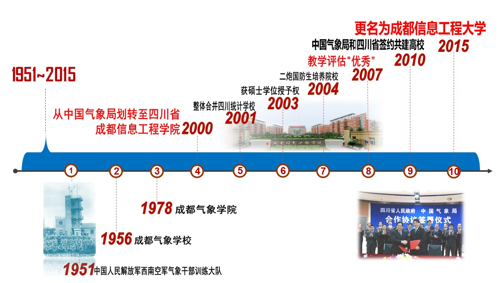

1951年，为适应新中国空军对气象人才的需求，学校前身——中国人民解放军西南空军气象干部训练大队在成都创建。
1956年，学校改制为成都气象学校，着力为新中国气象事业培养气象预报和大气探测人才。
1978年，学校升格为本科院校——成都气象学院，成为我国两所主要培养气象人才的高等院校之一，时任中国气象局局长邹竞蒙提出了学校“理工结合、以工为主；气电结合，以电为主(气象与电子信息结合、以电子信息为主)”的办学定位。
2000年，学校由中国气象局划转四川省，为适应四川经济社会发展需要，尤其是四川省大力发展电子信息产业的战略需要，学校更名为成都信息工程学院。
2001年，学校整体合并原隶属国家统计局的四川统计学校(万里任学校第一任校长)。
2003年，学校获得硕士学位授予权。
2004年，学校成为第二炮兵部队全国第一所签约培养国防生的地方普通高校。
2007年，学校在教育部本科教学工作水平评估中获得"优秀"。
2010年，学校成为四川省人民政府与中国气象局签约共建学校。
2015年，学校更名为成都信息工程大学。